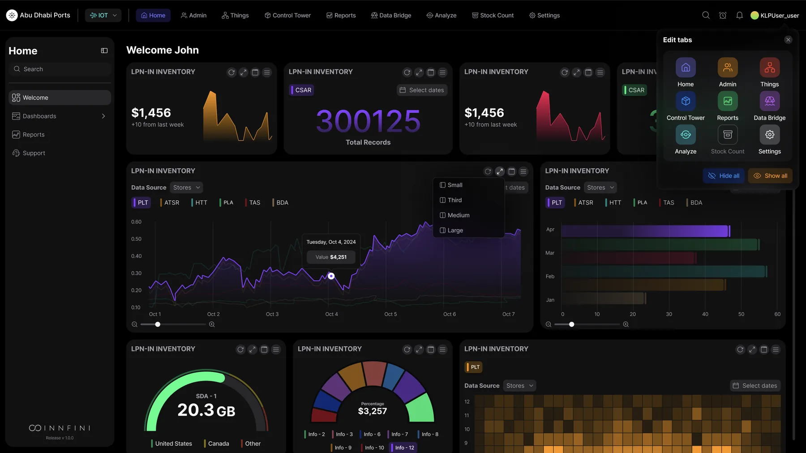
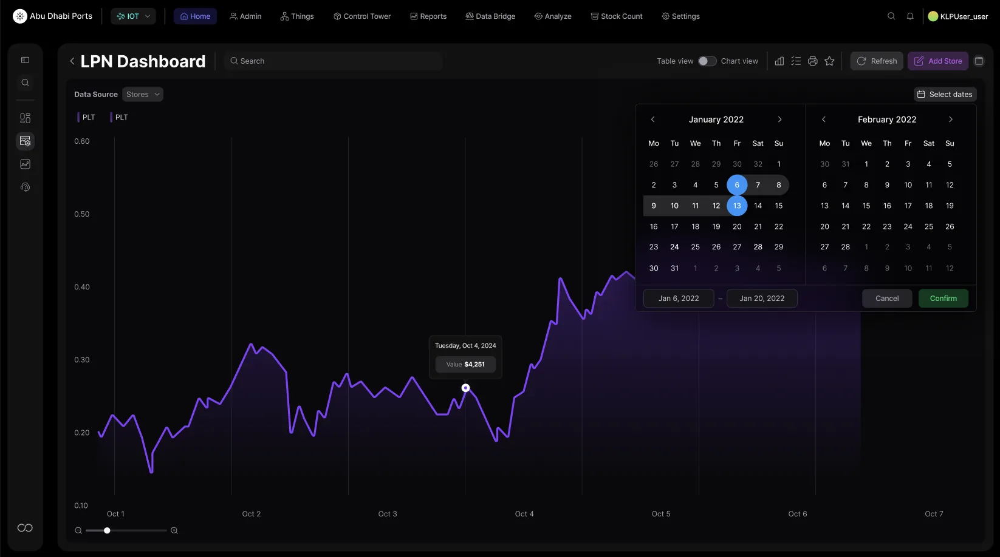
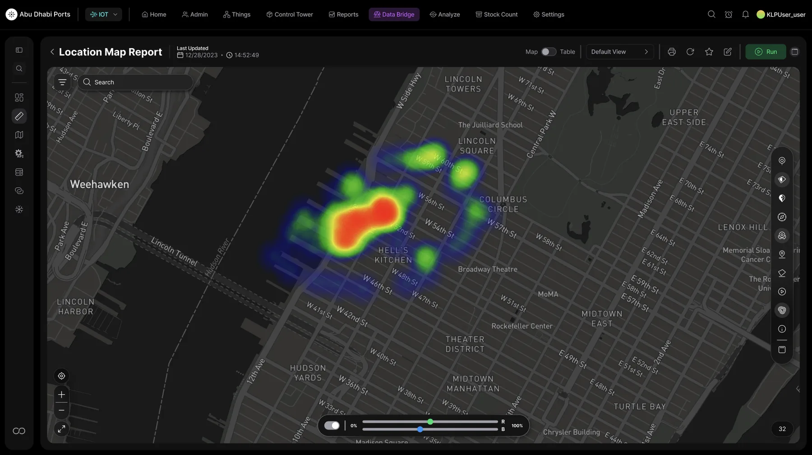
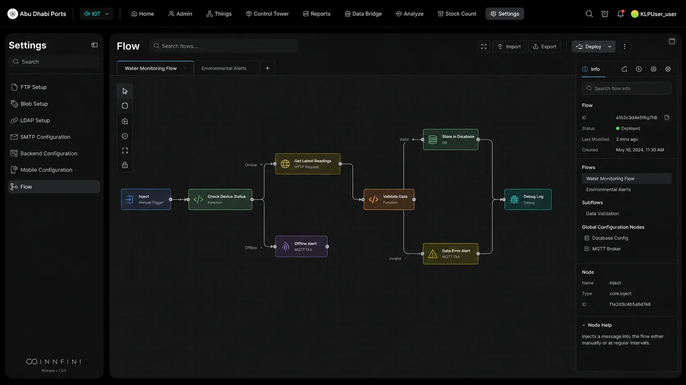

Take a guided tour through the dashboards, asset views, geospatial reports and live deployment screens that power real-time operations. One operational workspace for visibility, intelligence and action.

Each module is a real production surface — not a marketing mockup. Click through to see live screens, supported workflows and the data each one orchestrates.
Live KPIs, exceptions, alerts, workflows, SLA timers and AI recommendations — the single starting point for operators, supervisors and managers.
Walk through the dashboard →
Drill into any asset — location, ownership, sensor data, work orders, movement timeline and audit trail — in a single profile.
Explore the asset view →
Heatmaps, movement flow lines, dwell-time clusters, zones and geofences — across indoor floorplans and outdoor maps.
See the maps →
Compose operational automation visually. Drag nodes, connect them, test the run, version every change — no code, full governance.
Build a workflow →INNFINI lets users start with a high-level operational view, identify what needs attention, drill into the asset or event, analyze movement patterns, and take action through workflows and recommendations.
Live KPIs and exceptions surface what needs attention.
Choose an exception or AI recommendation to investigate.
Open the asset profile — sensors, work orders, history.
Validate movement patterns, dwell time and zone activity.
Drag, drop, version and deploy the workflow that resolves it.
INNFINI brings live operations into one intelligent product experience — combining dashboards, asset intelligence, maps, reports, AI recommendations, workflows and real deployment proof into a single operational platform.
Book a 30-minute walkthrough with our solutions team — live data, your sensors, your workflows.